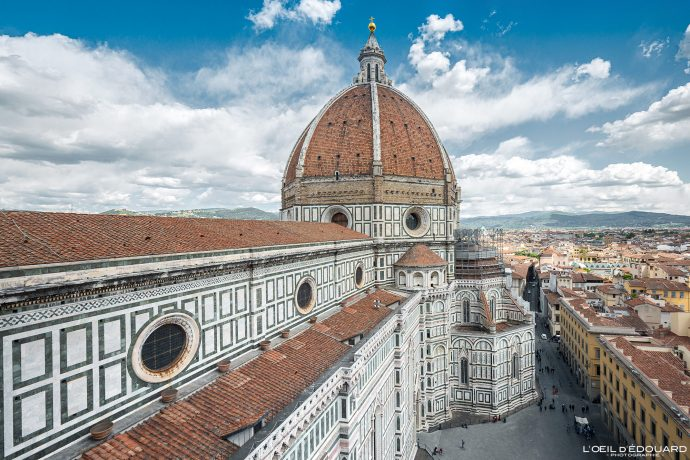
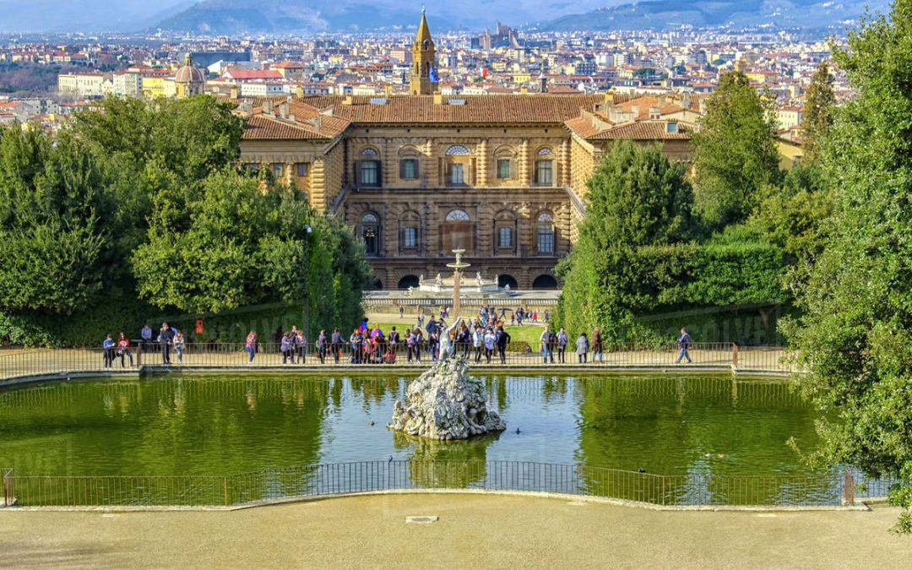
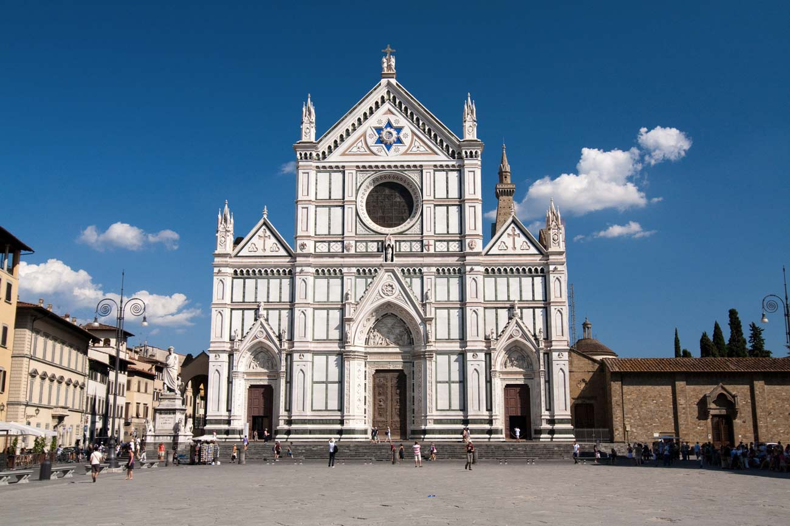

Le site le plus populaire à visiter à Florence est certainement son Duomo (cathédrale), la Cattedrale de Santa Maria del Fiore. La construction de l’immense cathédrale gothique a débuté en 1296, a été consacrée en 1436, et peut aujourd’hui accueillir jusqu’à 20 000 personnes.
Situé juste derrière le Palais Pitti, le Jardin de Boboli intègre indéniablement les merveilles de Florence. Souvent comparé à ceux de Versailles, le Jardin de Boboli offre une parenthèse luxuriante et luxueuse digne des plus grands contes de fée. Musée de la Porcelaine, Galerie des Costumes, Grande Grotte, Kaffeehaus, Il Viottolone mais aussi fontaines et parterres de roses et de dahlias dressent le portrait d’un lieu hors du temps, sublimé par de précieux héritages.
Santa Croce, située sur la Piazza Santa Croce, est la plus grande église franciscaine d’Italie. Sacrée donc, elle abrite les tombeaux de plusieurs Florentins importants dont Michel-Ange et Dante Alighieri, mais aussi ceux de Nicolas Machiavel et Galilée. Le vaste intérieur est habillé de vitraux et de fresques exceptionnelles. Une des œuvres les plus importantes de Brunelleschi, « la Cappella dei Pazzi » , vient également sublimer la beauté des lieux.
